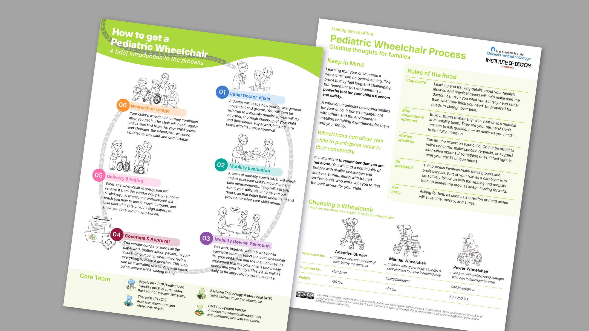
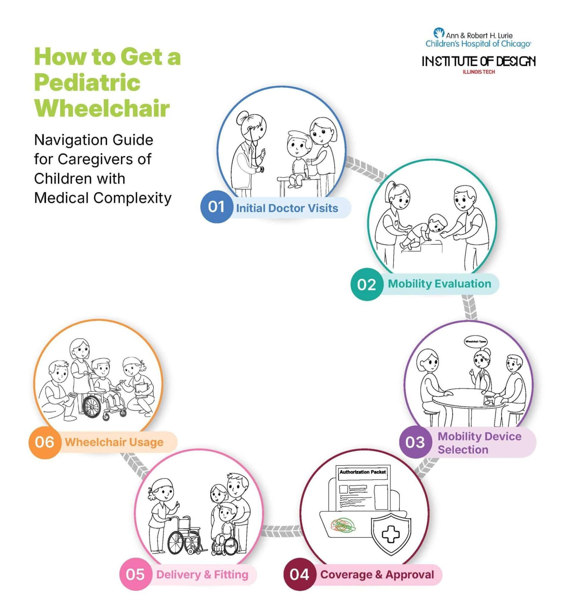
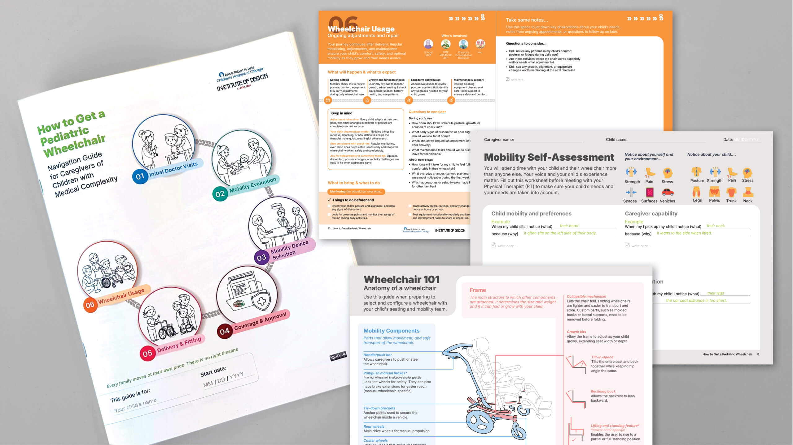

Navigation Guide for Pediatric Wheelchair Acquisition
Ten Research Methods Translate a High-Stakes, Fragmented Journey into Manageable Steps

01 · TL;DR
- Team
- Angela Petrone, Richa Sharma, Arundhuti Bhattacharya, Rhea Shah, Xuci Hu, Ashlyn Spilde
- Faculty
- Tomoko Ichikawa (Professor of Visual Communication, Institute of Design)
- Partners
- Ann & Robert H. Lurie Children’s Hospital of Chicago and its Foster Health Lab
- Methods
- Ten distinct research and synthesis methods
Objective
The ID team, in partnership with Ann & Robert H. Lurie Children’s Hospital of Chicago and its Foster Health Lab, designed practical communication tools that make this opaque, emotionally taxing process more transparent and manageable for caregivers.
Approach
Ten distinct research and synthesis methods ensured the navigation guides reflected both clinical accuracy and lived experience.
Outcome
The design process produced a comprehensive navigation system, an Overview Handout and a 24-page Detailed Guide.
Years: Typical Wait Time Between Wheelchair Replacements Under Insurance Policies
Months: Average Timeline from Prescription to Wheelchair Delivery
Stakeholders, Physicians, Therapists, Vendors, Insurance Coordinators, and Others Involved
02 · Summary
Navigation Guide for Caregivers of Children with Medical Complexity
When a child with medical complexity needs a wheelchair, families face a journey that can stretch months or years—navigating prescriptions, assessments, fittings, insurance approvals, and ongoing adjustments across multiple providers and systems. The ID team, in partnership with Ann & Robert H. Lurie Children’s Hospital of Chicago and its Foster Health Lab, designed practical communication tools that make this opaque, emotionally taxing process more transparent and manageable for caregivers.
By translating fragmented medical, technical, and insurance information into caregiver-centered navigation guides, this project helps families anticipate what’s ahead, ask better questions, and advocate more effectively.

How to Get a Pediatric Wheelchair
03 · Situation
A High-Stakes Decision Without a Map
Currently, no comprehensive, caregiver-centered resource in the US clearly explains the wheelchair acquisition experience from end to end. Caregivers must piece together information from multiple sources—hospital staff, equipment vendors, insurance companies, and online communities—often discovering critical details only after costly delays.
The stakes are high. Insurance policies typically require families to wait 3 to 5 years before a replacement is allowed, making each wheelchair decision largely irreversible. Yet families receive little structured guidance on how to navigate this complex system.
“The process of acquiring a wheelchair for a child with medical complexity is long, fragmented, and emotionally taxing. Information is scattered, inconsistent, and difficult to interpret, leaving caregivers unsure of what to expect or how to advocate effectively.”
— Angela Petrone (MDes 2026)
04 · Process
A Rigorous Research Approach
The team began by immersing themselves in the existing ecosystem—auditing 15+ patient navigation guides, analyzing conversations on Facebook and Reddit, and conducting in-depth interviews with parents and wheelchair professionals.
What emerged was a critical mismatch. The hospital-based journey didn’t align with what families actually experienced. Through member-checking sessions and co-analysis workshops, the team validated their findings with both parents and healthcare partners, redefining the six stages of the journey from the caregiver’s perspective.
Research & Prototyping — As part of the process of design research, prototyping, and testing, Angela Petrone (MDes 2026) asks for feedback from families and caregivers.
Ten distinct research and synthesis methods ensured the navigation guides reflected both clinical accuracy and lived experience:
User Interviews
In-depth conversations with 5 parents who had navigated the wheelchair acquisition process revealed emotional, financial, and logistical dimensions of their journeys.
Subject Matter Expert Interviews
Discussions with 5 wheelchair professionals—including physical therapists, rehabilitation physicians, and equipment vendors—provided clinical perspective and technical expertise.
AEIOU Framework
Structured interview synthesis by coding quotes across Activities, Environments, Interactions, Objects, and Users enabled systematic analysis of how families navigate the wheelchair ecosystem.
Experience Journey Mapping
Multi-dimensional maps tracked child age, events, process stages, waiting times, insurance/finances, and caregiver mindsets across 15+ years of each family’s experience.
Stakeholder Mapping
Identified and visualized the complex network of physicians, therapists, vendors, insurance coordinators, and patient advocates involved throughout the process.
Digital Ethnography
Analyzed online communities (Facebook groups, Reddit forums, TikTok) by role-playing as a new parent seeking wheelchair information, uncovering informal knowledge-sharing patterns.
Member Checking (Participatory Validation)
Systematic feedback sessions with parents using structured guides validated stage naming, timing estimates, information priorities, and format preferences.
Co-Analysis Workshops
Collaborative sessions with healthcare professionals verified clinical accuracy and ensured the guide aligned with actual care processes.
Comparative Audit Analysis
Systematic review of 15+ existing patient navigation guides identified content gaps, formatting best practices, and opportunities for differentiation.
Progressive Disclosure Information Architecture
Developed a two-tier system (Overview + Detailed Guide) based on research findings that caregivers need both quick-reference orientation and deep procedural support at different moments.
“One challenge we faced was the mismatch between clinician-based journey steps and the actual process caregivers experience. Reconciling these two realities meant convening with both medical professionals and parents to iteratively refine the stages.”
— Richa Sharma (MDes 2026)
05 · Outcome
A Two-Part Navigation System
The design process produced a comprehensive navigation system, an Overview Handout and a 24-page Detailed Guide.
Overview Handout
The Overview Handout provides immediate orientation through “Rules of the Road” mindsets, wheelchair types, core care team members, and a visual summary of the 6-stage journey.
Detailed Guide
The Detailed Guide is a 24-page interactive workbook structured around six stages: Initial Doctor Visits, Mobility Evaluation, Mobility Device Selection, Coverage & Approval, Delivery & Final Fitting, and Ongoing Usage Monitoring. Each stage includes clear descriptions, realistic timelines, preparation checklists, and fill-in sections for tracking contacts and notes.

Available for Download
- The overview, How to Get a Pediatric Wheelchair: A Brief Introduction to the Process, and
- The full guide, How to Get a Pediatric Wheelchair: Navigation Guide for Caregivers of Children with Medical Complexity
“We didn’t want to create just another medical pamphlet. These guides translate fragmented, jargon-heavy information into a consistent format that empowers caregivers to navigate this journey with confidence.”
— Arundhuti Bhattacharya (MDes + MBA 2026)
06 · Impact
Making the Invisible Visible
This project addresses a significant gap in patient and caregiver education. By integrating medical, technical, and lived-experience perspectives, the work supports more informed decision-making and helps families consider how mobility devices affect daily life beyond clinical requirements.
The resources were designed with accessibility in mind—content uses plain language for easier understanding and clarity, and formats were shaped around caregivers’ real constraints. By making the resources open-source and partnering with healthcare providers for distribution, the project increases its potential for meaningful adoption.
The team is actively gathering feedback and conducting usability testing to inform a version 2.0 release designed for broader distribution and continued impact. This new version will translate content into a consistent 5th grade reading level.
07 · Team
Students
- Angela Petrone (MDes 2026)
- Richa Sharma (MDes 2026)
- Arundhuti Bhattacharya (MDes + MBA 2026)
- Rhea Shah (MDes 2025)
- Xuci Hu (MDes 2026)
- Ashlyn Spilde (MDes 2025)
Faculty & Partners
- Tomoko Ichikawa (Professor of Visual Communication, Institute of Design)
- Ann & Robert H. Lurie Children’s Hospital of Chicago: Dr. Carolyn Foster, MD, MS, Assistant Professor of Pediatrics, Northwestern University Feinberg School of Medicine; Director, Foster Health Lab · Peter Walsh, Behavioral Research Coordinator II; Foster Health Lab · Melanie Turenne, Parent Partner & Research Consultant
- Caitlin Koob, PhD, MS, OTR/L, Faculty Research Associate, College of Health Professions, Medical University of South Carolina
This project was partially funded by the Yaeger Family Research Scholar Fund.
Source: Institute of Design — Pediatric Wheelchair Guidance Supports Caregivers